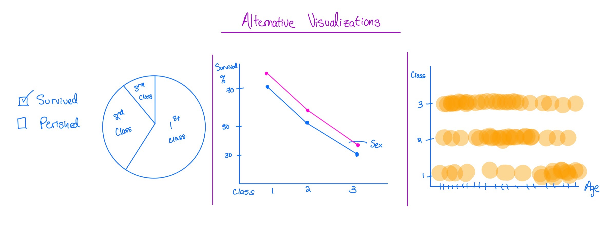

Everyone is familiar with the historic sinking of the Titanic, the luxury cruiseliner that never completed its
maiden voyage after colliding with an iceberg the morning of April 15, 1912. The goal of this project was
to determine what types of individuals, based on their demographic information, were more likely to have survived
the tragedy. Our visualization seeks to express not only the scale of the disaster, captured through
aggregate data such as sex, class, and age, but also the toll of the disaster at the idividual level, manifested
in the point marks that represent specific passengers.
Some of the visual econding decisions were easy, such as opting to use the color channel of red within the stacked
bar chart to denote those who lost their life. We also decided to use the color channel of gold in the representation of
circles to denote first class passengers. This choice takes advantage of our society's learned disposition to associate
gold with status, and should be obvious to any viewer. Using different colors for each class respectively was the cleanest
way to encode the categorical attribute of class into the point marks. Further, we also used the points' position, a magnitudal
channel, to keep points of of the same class clustered together so that it would be easier to visually compare the raw number
of indivudals who meet the criteria selected by the user.
Speaking of the user, our interaction techniques were designed to let the user view the data at both a macro and granular
level. The user can combine selections however they want to see stacked bar charts that visualize the raw total or percentage of
passengers who survived or perished, always broken down by class but then drilled down further by sex or age. For further information
on specific total counts or proportions, a user need only hover their mouse over a bar to activate a tooltip with this more specific
information. This same type of flexibility is featured in the points plot where users can decide how they want to filter the plot, and
then immediately see the change in results. By clicking on specific points, users can learn more about the individuals in the dataset.
Zoomed in, they can see a particular passenger's name, their age, and whether or not they had a family member on board.
Unsurprisingly, the proportion and raw number of those who perished was related to their class; the highest number of victims were
in third class, while the fewest were in first. The familiar phrase "Women and children first" also proved to be true; first and second
class women had survival rates of 96% and 89%, respectively. However, only half of third class women survived. This emphasizes the
privilege that comes with class. Individuals who were less than 30 years of age were, regardless of class, the most likely to survive
as well. Unfortunately, as was consistent with earlier findings, these younger populations were more adversley affected if they had
a lower class ticket; the proportion of young second class passengers who lost their lives (50%) was roughly doubly that of first class
passengers (27%). In the same way, the proportion of young 3rd class passengers (71%) who perished was roughly triple that of first class.
What we did not expect to find was that the proportion of second class males who perished was roughly equivalent to the proportion of 3rd
class males at 85.4% and 84.8%, respectively. This is the only aggregate statistic that bucks the trend of a higher class leading to
a more likely chance of survival. Another interesting observation is that the raw number of first class passengers who survived is roughly
double that of the secod and third classes combined. This is significant because there were substantially more second and third class passengers
on board.
We decided early that it would be best to implement a stacked bar chart when designing our visualization. The stacked bar chart is
particularly effective when comparing the proportional data as it clearly allows you to compare with relative ease each class's survival
rate by age or sex. Similarly, it is also effective at the macro level when representing raw totals. It enables the user to clearly
see the scale of the total loss of life. The point plot was the best possible solution for the problem of allowing the user to learn more
about specific individuals. It also adds a more personal human element to the visualization. For this idiom, we also considered using a pie
chart since on the surface it provides relative information about each class's total number of survivors, We felt that this representation
detracts from the idea of treating these data points as individuals. Other idioms, such as slope charts and scatter plots, were also quickly
dismissed alternatives since they do not allow for as clear encoding of multiple categorical attributes.

Something we struggled with was figuring out how to include text within the points in the point plot. d3 poses a variety of syntactical obstacles that
we had to overcome in order to get our desired visualization. Another struggle with this particular dataset was incomplete data.
Information was collected regarding a passenger’s home or destination (or sometimes both), and though it would have been interesting to
see what percentage or how many passengers came from or were going to a particular place, the data was formatted in multiple inconsistent
formats. This ultimately forced us to abandon some of our original questions since individually cleansing 1300 records would not have been
time efficient. Also, since only half the records had such information, it is unlikely we would have been able to say anything substantial
regarding homes or destinations in the final analysis. In the end, we learned that certain visualizations do a substantially better job of
combining categorical data. We also found that enabling the user to perform exploratory analysis through filters and selections makes for
a visualization feel very powerful. As a team, work was divided such that some members focused on developing the actual code that creates
the visualizations, while others focused on the design of the presentation site and the "about" write-up.